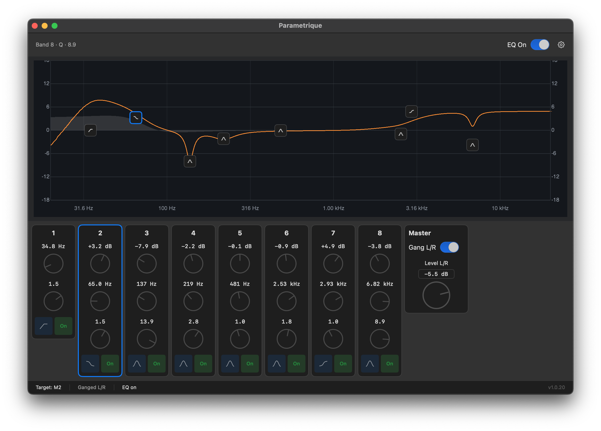

Loading…
Download
2 - channel 8-band parametric EQ
Per-channel EQ with a live response graph. Settings persist after you quit the app.
System volume control
Proxies audio so keyboard and menu bar volume work with your output device.
Driver + app
One installer packages the HAL driver and the Parametrique configuration app.
Quick install
- Download and open
Parametrique-<version>.pkg. - Complete the installer (one admin password prompt).
- Open System Settings → Sound and select Parametrique EQ Device as output.
- Launch Parametrique from
/Applications. - Open Parametrique → Settings and choose your speakers or interface under Proxied device.